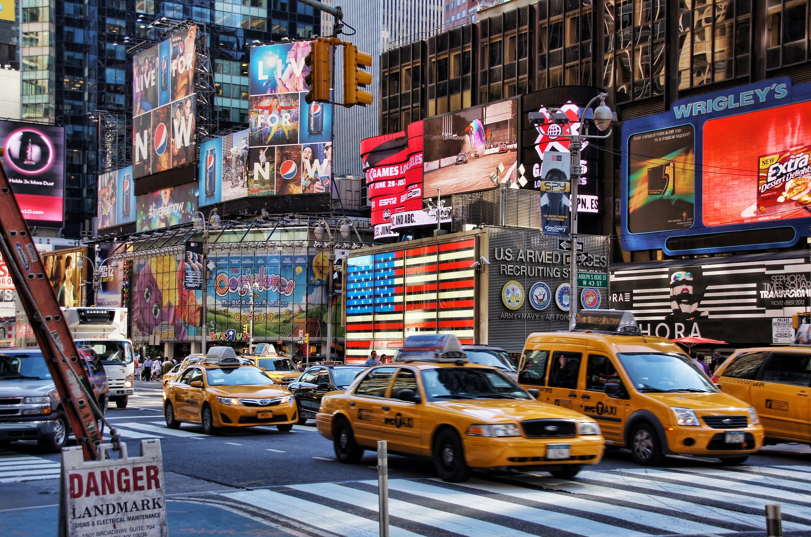
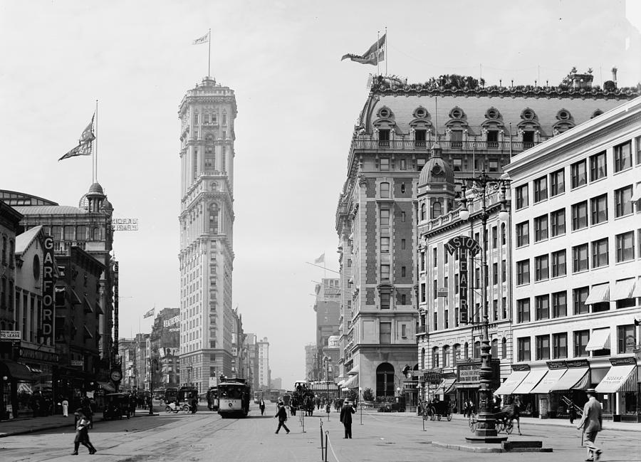

TIMES SQUARE
Known early on as Long Acre (also spelled Longacre) Square, it had an unsavory reputation as the centre of illicit activity in the 1890s, though earlier in the 19th century it had been both a commercial and a residential area. The square was renamed in 1904 for The New York Times, which opened its new offices in the Times Tower on the square (though it would outgrow them by 1913). Almost immediately the square became the place where New Yorkers gathered to celebrate the arrival of the new year. In 1907 the Times began lowering a huge glass ball down its flagpole at midnight on New Year’s Eve to mark the occasion. Throughout the years, ever more sophisticated technology was used for the square’s ball drop as the tradition came to include live television broadcasts that shared the experience with tens of millions of people across the United States.
HISTORY
The name “Times Square” was developed by Albert Ochs in 1904. Ochs, the renowned publisher of The New York Times, elected to move his paper to the then-Long Acre Square. After the move, the square was changed to reflect the new ownership. Before The New York Times moved, Long Acre Square was merely a set of brownstone buildings, developed by a man who saw potential in the location. New Yorkers raced to the new square, desperate to make a home for themselves in this new place. Before long, a new district began to grow around them. Crime became commonplace, and prostitution and theft began to thrive. Things began to change in the 1880s. With the spread of electricity, Long Acre Square suddenly seemed much safer for residents. Street lights and advertisements began to dominate the area. In 1895, a new resident, Oscar Hammerstein I, made the decision to create an entertainment industry in the square. He called his new locations Olympia, a structure that featured three theaters. Before long, more theaters began to sprout from seemingly everywhere. By the time The New York Times arrived, the area was an established entertainment haven.
CURIOSITIES ABOUT TIMES SQUARE
- It's only begin called Times Square in 1904.
- The square's extremely bright lights can even be seen from outer space.
- You can still see remnants of an opulent turn-of-the-century theater.
- Some top attactions include superhero characters and the Naked Cowboy wears just briefs and a guitar.
- The photograph of the famous kiss between a soldier and a nurse occurred in Times Square at the end of WWII and was documented by Alfred Eisenstaedt.